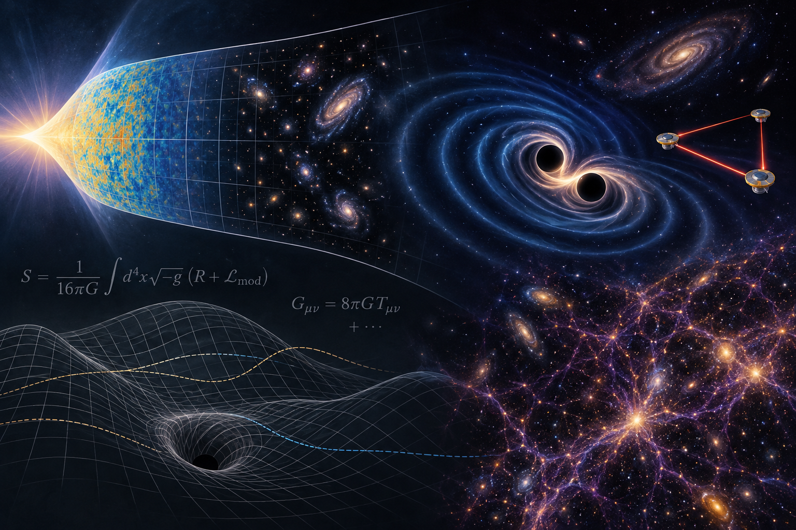

Research Interests
Gravity is my favourite force. More than a hundred years ago,
Einstein gave us a beautiful geometrical framework to describe it,
but much remains to be understood: how gravity manifests itself
observationally, and how it fits consistently with the other
interactions and with our broader understanding of Physics.
My research lies at the interface between theory and experiment,
with the aim of understanding better how gravity works and what
it can teach us about fundamental physics.

Cosmology
Gravity plays a central role in cosmology, the study of the origin,
evolution, and contents of the Universe. Because gravity acts over enormous
distances, it is the force that shapes the Universe on its largest scales.
My research explores open questions in both the early and late Universe.
Dark Energy and Dark Matter
What are dark matter and dark energy? Most of the present-day Universe is
made of components whose nature we still do not understand. There are,
however, many exciting theoretical ideas and rapidly improving observations
that may help us uncover what they are.
Selected publications on dark energy and dark matter ↗
Gravitational Waves
Gravitational waves are ripples in spacetime that
travel across the Universe at the speed of light.
Predicted by General Relativity and now directly observed,
they have opened a new way of exploring the cosmos. They
can be produced by merging black holes and neutron stars,
but also by more exotic processes in the early Universe.
From Theory to Experiments
How are gravitational waves produced, and how
do they travel from their sources to us? I study
the physics of their generation and propagation,
developing theoretical tools that help us interpret
observations and connect them with fundamental physics.
Selected publications on gravitational wave theory ↗
From Experiments to Theory
What can gravitational-wave observations teach us about
gravity and the Universe? I am involved in several
gravitational-wave experiments and collaborations
across very different frequency ranges,
including NANOGrav, SKA, LISA, and the Einstein
Telescope. I am particularly interested in using
their measurements to test gravity, cosmology, and
fundamental physics.
Selected publications on gravitational wave experiments ↗
Theories of Gravity
Sometimes the best way to understand a theory is to
look at it from the outside and compare it with possible
alternatives. I am interested in developing theories of
gravity beyond General Relativity, both to explore new
physical possibilities and to better understand the
remarkable structure — and possible limitations — of
Einstein's theory.
Building Theories of Modified Gravity
How can we construct consistent alternatives to
General Relativity that remain compatible with
observations? This is surprisingly difficult. I am
interested in developing new theoretical methods to build
such theories and in identifying distinctive predictions
that could allow us to tell them apart from General
Relativity.
Selected publications on modified gravity ↗
The Physics of Black Holes
What do black holes look like in alternative
theories of gravity? At first sight, they can be
remarkably similar to those of General Relativity, but
subtle differences may have important consequences for both
fundamental theory and observations.
Selected publications on black holes ↗
Group Seminars
We are a group of enthusiastic researchers on the topics
above. See our group’s upcoming seminars.
View the seminar programme →